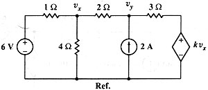

E02 DC analysis: Problem #5 revisited: symbolic dependant source
In the following circuit, find the value of k which will produce that vy equals zero. (Hayt-Kemmerly)

Solution.
As we saw in problem ·5, this problem can be solved in few steps usign the normal mode of Symbulator. Although, I want to use it to illustrate Expert Mode use. Define (Expert) Mode and run the symbulation, asking for the k at the end:
Clear the symbolic variable.
DelVar rx
sq\expert("e6,1,0,6; j2,0,y,2; ed,4,0,k*vx; r1,1,x,1; r4,x,0,4; r2,x,y,2; r3,y,4,3"):k
Press Enter, choose DC, and wait until the first Dialog appears. We will leave 9 and Normal, so just press Enter again and a second Dialog appears. In the 1st level unknowns list, replace vy (which value we know) for k (which value we don't know). Leave the second field as is. In the third field, enter vy. In the fourth field, enter vy=0. In the fifth, choose Symbulate because there is no need for further manipulation. Press Enter and prepare to smile. A few seconds later, it is done!
-13/4
P.S. (Expert) Mode is not necessary here, but is a faster and more elegant way to find the answer. A pleasure hard to explain... maybe it is just vanity.